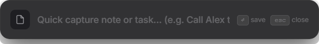
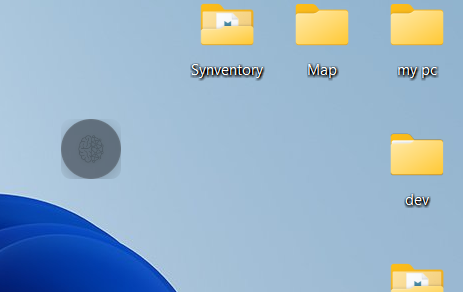

Supercharged productivity. Always within arm’s reach.
A frameless, local-first desktop overlay combining natural language task capture, markdown scratchpad, procedural focus soundscapes, and calendar synchronization — pinned above your workspace or docked to your display edge.


Engineered for seamless flow.
Switch through the unified workspaces built into a single lightweight desktop overlay.
Zero-Asset Ambient Soundscapes
Doing It synthesizes audio in real time using math and Web Audio API filters. No heavy MP3 files or network downloads. Click below to test live in your browser:
Deep native Windows 11 integration.
Crafted specifically for the Windows desktop environment with zero latency.
Always-On-Top Pinning & Edge Docking
Pin the widget floating above code editors and browser viewports with 1 click. Drag within 20px of any display boundary to dock into a full-height sidebar with multi-monitor memory.
Live Spotify Desktop Control
Inspects the local Windows Spotify process to display the active track title and artist with Prev / Play-Pause / Next controls.
100% Local-First & Atomic Staging
All data is written atomically to local JSON staging files before rename, preventing corruption on sudden power loss. Rolling 5-day backups.
Day Planner Agenda & 1-Click Video Meetings
Synchronizes private RFC 5545 .ics calendar URLs from Google Calendar, Microsoft Outlook, or Apple Calendar. Automatically extracts video meeting links (Google Meet, Zoom, Microsoft Teams) with 1-click launch buttons and 5-minute proactive chimes.
Built for keyboard warriors.
Fly through your day without touching the mouse.
Frequently asked questions.
%APPDATA% folder. You can also use the Bring Your Own Cloud (BYOC) setting to redirect your data directory to OneDrive, Google Drive, or Dropbox for instant, private cross-device sync.
.ics calendar sync.
backups/ folder on startup. In addition, you can export your entire database to a clean JSON file at any time from Settings or via Command Palette (Ctrl+K → Data: Export Backup JSON).
Reclaim your focus on Windows.
Free, local-first, zero telemetry, and built for speed.